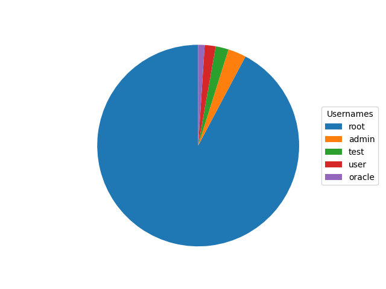
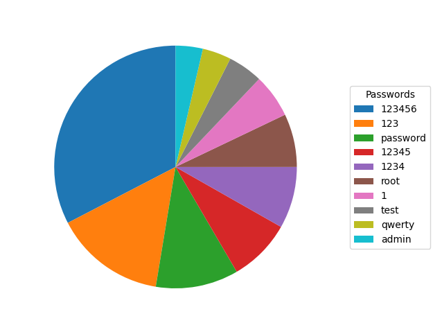
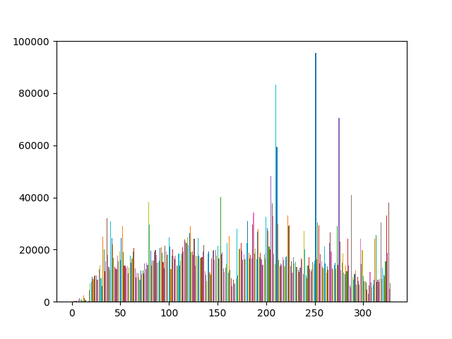
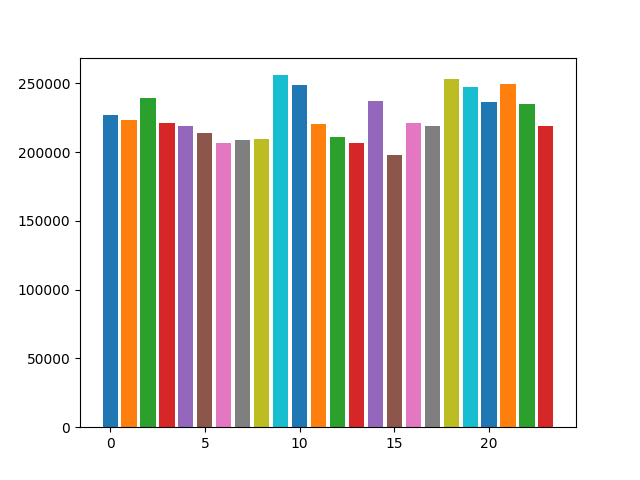
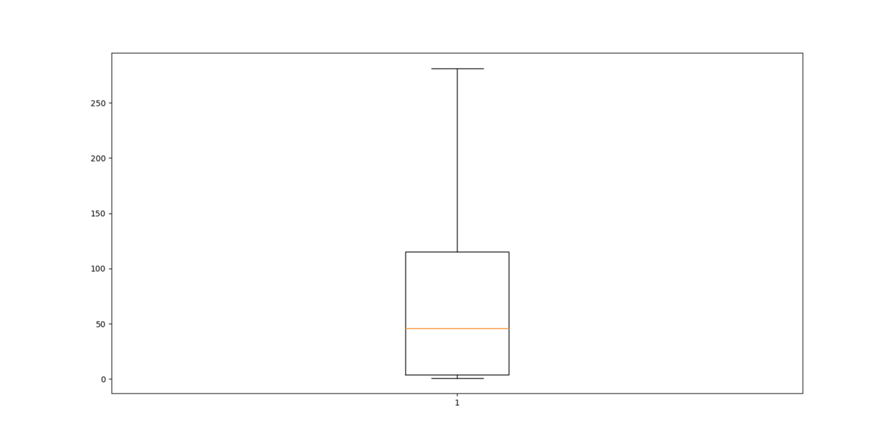

I run a Cowrie honeypot from a digital ocean droplet. I have written about some of the malware I have found downloaded to it, and botnets I have observed. I also have a CSV file that autoupdates, showing daily login attempts. I use python to parse Cowries output into SQLite. To generate the graphs, I use matplotlib.
Graphs Last Updated 8/11/2021 (Created using Matplotlib)

Most Used Usernames (Last Updated 8/11/2021)

Most Used Passwords (Last Updated 8/11/2021)

Graph of SSH Attempts vs Number of Day running

Graph of SSH Attempts vs Hour Running I find it interesting that attacker activity is basically the same amount throughout the day.

Boxplot of Number of Attempts by IP There are many IP addresses with thousands of attempts, but most have only a few.